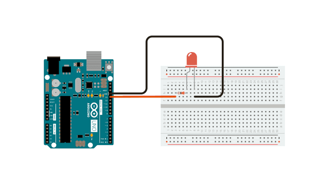
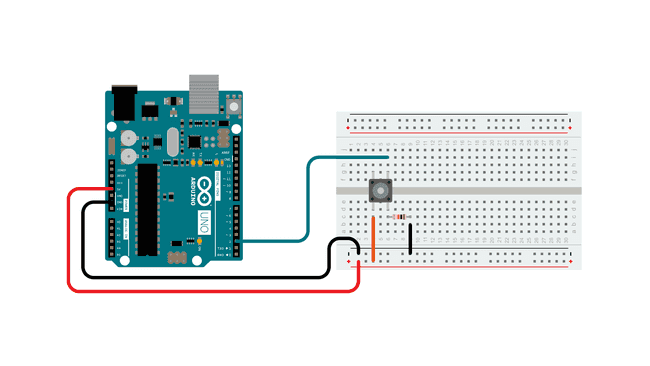
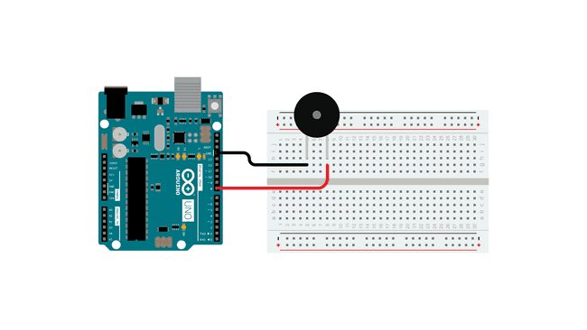
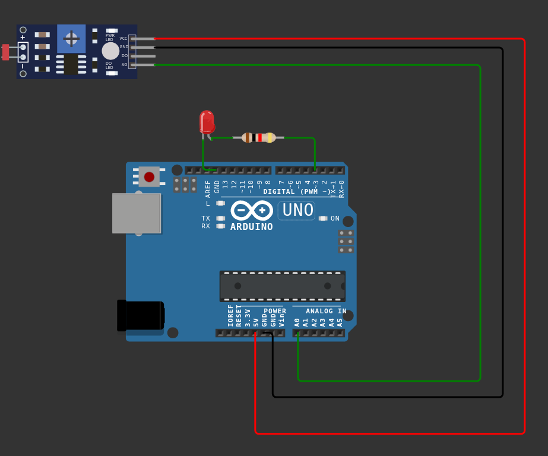
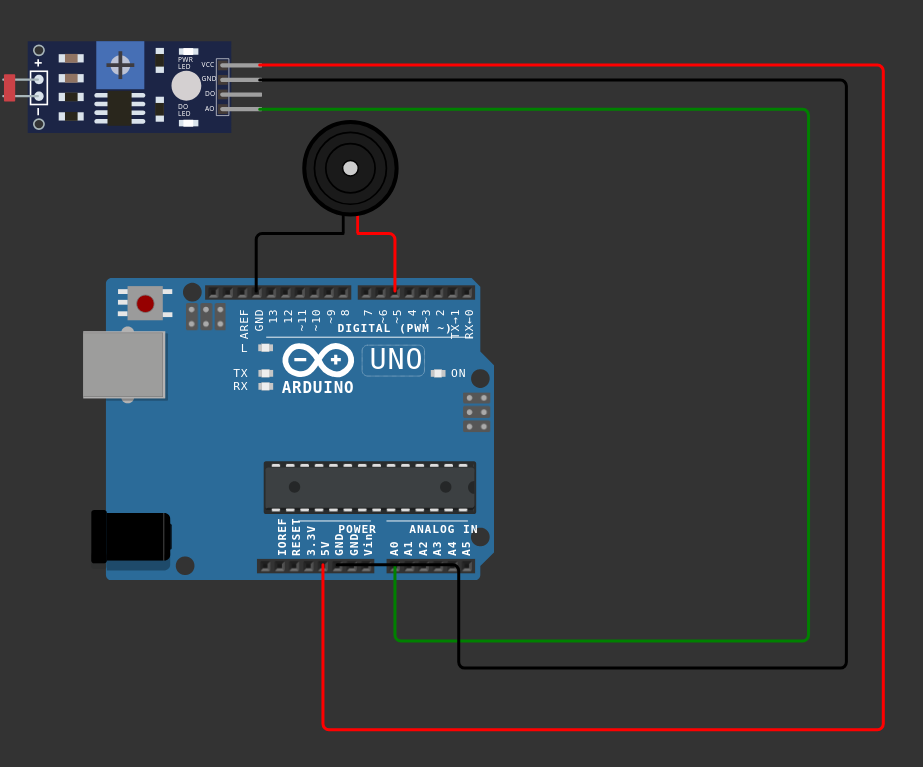
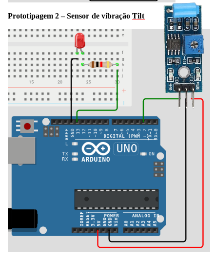

1. Variáveis de Pino
Criamos int botao = 2; e int led = 13; para facilitar a troca de portas em um só lugar caso a montagem mude.
Arduino: Entradas, Saídas e LED
Aprenda os fundamentos da robótica e eletrônica criando um sistema inteligente de acionamento por botão simulado no Tinkercad.
Neste projeto, você vai construir e programar um circuito eletrônico capaz de controlar um LED utilizando um botão. O objetivo principal é compreender como o Arduino recebe informações de um componente de entrada, processa essas informações por meio de um programa e controla um componente de saída.
Antes de montar o circuito, precisamos compreender como os componentes trabalham juntos. Imagine uma lâmpada inteligente que acende quando você aperta um botão: cada peça cumpre um papel fundamental no fluxo da informação.
| Componente | Função Prática | Classificação |
|---|---|---|
| Botão de Pressão | Informa ao Arduino quando é pressionado pelo usuário. | Entrada |
| Arduino Uno | Lê as informações de entrada e executa as instruções do programa. | Processamento |
| LED | Emite luz visível quando recebe corrente elétrica do pino. | Saída |
| Resistores | Limitam a corrente elétrica protegendo os componentes contra danos. | Proteção / Estabilização |
O usuário pressiona o botão físico gerando um nível lógico HIGH (5V).
O Arduino lê o Pino 2 digital e avalia a condição do código programado.
O Arduino envia 5V pelo Pino 8 digital acionando o circuito do LED.
O LED acende instantaneamente e se apaga ao soltar o botão.
Projeto 01 - Controle de LED com BotãoAntes de continuar, tente localizar onde ficam a lista de componentes à direita, o painel central de montagem e o botão verde "Iniciar Simulação" no topo!
Abra o menu lateral de componentes no Tinkercad e arraste os itens abaixo para sua área de trabalho:
Microcontrolador central
Organização das conexões
Indicador luminoso visual
Limita a corrente do LED
Sinal elétrico de entrada
Resistor Pull-down do botão
Siga com atenção as três etapas de fiação para garantir que a alimentação, a saída (LED) e a entrada (Botão) estejam perfeitas.
💡 O que é Pull-down? O resistor de 10 kΩ garante que a entrada do Pino 2 permaneça com valor LOW (0V) estável enquanto o botão estiver solto, prevenindo ruídos elétricos.
| Componente | Conexão Destino no Arduino / Protoboard |
|---|---|
| Alimentação Positiva | Pino 5V ➔ Trilho Positivo (+) |
| Referência Elétrica | Pino GND ➔ Trilho Negativo (-) |
| Botão de Pressão | Pino Digital 2 (Entrada) |
| LED (com resistor 220 Ω) | Pino Digital 8 (Saída) |
| Resistor 10 kΩ (Pull-down) | Entre o Pino Digital 2 e o GND |
Por que não podemos conectar o LED diretamente ao pino do Arduino sem utilizar o resistor de 220 Ω?
O LED possui uma resistência interna muito baixa. Se for ligado diretamente a 5V sem resistor, a corrente elétrica será excessivamente alta, podendo queimar a porta digital do Arduino ou o próprio LED instantaneamente.
Antes de digitar código em C++, precisamos escrever a lógica do sistema em português estruturado (linguagem natural). O problema central é: "Como fazer o LED acender somente quando o botão estiver pressionado?"
| Ação Física | Leitura Arduino | Estado LED |
|---|---|---|
| Botão Solto | LOW (0V) | APAGADO |
| Botão Pressionado | HIGH (5V) | ACESO 💡 |
Confira os diagramas de ligação dos componentes e, em seguida, copie o código C++ completo para carregar na sua placa via Arduino IDE.


// PROJETO: CONTROLE DE LED COM BOTÃO - CÓDIGO BASE
// Definição dos pinos
int botao = 2;
int led = 13;
void setup() {
// Configura o pino do botão como entrada
pinMode(botao, INPUT);
// Configura o pino do LED como saída
pinMode(led, OUTPUT);
}
void loop() {
// Lê o estado lógico do botão (HIGH ou LOW)
int estadoBotao = digitalRead(botao);
// Verifica se o botão está pressionado
if (estadoBotao == HIGH) {
digitalWrite(led, HIGH); // Acende o LED
} else {
digitalWrite(led, LOW); // Apaga o LED
}
}
Criamos int botao = 2; e int led = 13; para facilitar a troca de portas em um só lugar caso a montagem mude.
Executada uma única vez ao ligar a placa. Define quem vai ler sinais (INPUT) e quem vai enviar corrente (OUTPUT).
A estrutura if/else avalia continuamente o estado lido por digitalRead e decide se acende ou apaga o LED.
Um bom programador experimenta e transforma a lógica! Complete os 3 desafios práticos abaixo alterando o código do Arduino.
Objetivo: Fazer o LED permanecer aceso quando o botão estiver solto e apagar quando for pressionado.
Objetivo: Manter o LED aceso por 2 segundos (2000 ms) após o clique no botão.
Objetivo: Fazer o LED piscar 3 vezes seguidas ao pressionar o botão.

Copie e carregue o código C++ abaixo na sua placa.
// PROJETO: BUZZER
const int pinoBuzzer = 8; // Conecte o pino positivo do buzzer no pino digital 8
void setup() {
pinMode(pinoBuzzer, OUTPUT);
// Toca uma frequência de 1000 Hz por 500 milissegundos (0,5 segundo)
tone(pinoBuzzer, 1000, 500);
delay(1000); // Espera 1 segundo
}
void loop() {
// Exemplo gerando bipes contínuos
tone(pinoBuzzer, 2000, 200); // 2000 Hz por 200ms
delay(500); // Pausa de 500ms
noTone(pinoBuzzer); // Para o som (opcional se a duração já parou)
delay(500);
}Imagine que você precisa criar um alarme sonoro para indicar uma situação de emergência. Esse alarme deverá produzir um som agudo, seguido de uma pequena pausa, repetindo o padrão continuamente.
Agora você deverá criar um alarme que utilize dois sons diferentes para representar uma situação de atenção. O primeiro som deverá ser grave e longo. O segundo deverá ser agudo e curto.
delay() entre os sons?Você foi convidado a desenvolver um pequeno dispositivo musical utilizando Arduino. Sua missão é programar uma sequência de três notas musicais diferentes.
Programe o buzzer para reproduzir a seguinte sequência:
| Nota | Frequência | Duração |
|---|---|---|
| Nota 1 (Dó) | 262 Hz | 500 ms |
| Nota 2 (Mi) | 330 Hz | 500 ms |
| Nota 3 (Sol) | 392 Hz | 1000 ms |
O LDR é um componente eletrônico que altera sua resistência elétrica conforme a quantidade de luz que recebe.
Seu funcionamento é bastante simples:
O Arduino consegue identificar essas alterações por meio de uma entrada analógica.
O Arduino Uno possui entradas analógicas que permitem medir diferentes níveis de tensão.
Utilizando analogRead(), podemos obter valores entre:
| Valor | Interpretação |
|---|---|
| Próximo de 0 | Tensão baixa |
| Próximo de 512 | Tensão intermediária |
| Próximo de 1023 | Tensão alta |

Antes de criar qualquer sistema automatizado, precisamos aprender a receber informações do sensor.
Carregue o código abaixo no Arduino e observe os valores apresentados no Monitor Serial.
const int pinoLDR = A0;
void setup() {
Serial.begin(9600);
}
void loop() {
int luminosidade = analogRead(pinoLDR);
Serial.println(luminosidade);
delay(500);
}Imagine que você precisa desenvolver um dispositivo capaz de identificar se um ambiente está claro ou escuro.
O Arduino deverá analisar os valores recebidos pelo LDR e apresentar uma mensagem no Monitor Serial.
Modifique o código para que:
"AMBIENTE ESCURO"."AMBIENTE ILUMINADO".if (luminosidade < 400) {
Serial.println("AMBIENTE ESCURO");
}else {
Serial.println("AMBIENTE ILUMINADO");
}int luminosidade = analogRead(pinoLDR);<?Imagine que você precisa desenvolver uma luminária inteligente para uma residência.
A luminária deverá acender automaticamente quando o ambiente estiver escuro e apagar quando houver iluminação suficiente.
Agora vamos adicionar um LED ao circuito.
| Componente | Conexão |
|---|---|
| Perna positiva do LED | Pino digital 3, utilizando resistor de 220 Ω em série |
| Perna negativa do LED | GND |
Modifique a programação para que:
const int pinoLED = 9;pinMode(pinoLED, OUTPUT);digitalWrite(pinoLED, HIGH);digitalWrite(pinoLED, LOW);if (luminosidade < 400) {
digitalWrite(pinoLED, HIGH);
} else {
digitalWrite(pinoLED, LOW);
}Uma empresa deseja desenvolver um sistema de iluminação que consiga identificar diferentes níveis de luminosidade.
Diferentemente dos desafios anteriores, agora o sistema deverá apresentar três comportamentos.
Programe o Arduino para apresentar os seguintes resultados:
| Valor do LDR | Situação | Comportamento do LED |
|---|---|---|
| Abaixo de 300 | Muito escuro | LED piscando |
| Entre 300 e 700 | Luminosidade intermediária | LED aceso |
| Acima de 700 | Ambiente muito iluminado | LED apagado |
if (luminosidade < 300) {
// LED piscando
}else if (luminosidade <= 700) {
// LED aceso
}else {
// LED apagado
}digitalWrite(pinoLED, HIGH);
delay(300);
digitalWrite(pinoLED, LOW);
delay(300);Copie e carregue o código C++ abaixo na sua placa.
// PROJETO: BUZZER
const int Buzzer = 8; // Conecte o pino positivo do buzzer no pino digital 8
void setup() {
pinMode(Buzzer, OUTPUT);
}
void loop() {
// Exemplo gerando bipes contínuos
tone(pinoBuzzer, 2000); // 2000 Hz por 200ms
delay(200); // Pausa de 500ms
noTone(pinoBuzzer); // Para o som (opcional se a duração já parou)
delay(1000);
}Sabendo as frequências da escala musical:

Imagine que você precisa construir um sistema de segurança para um ambiente. Quando o local ficar escuro, o Arduino deverá identificar a mudança de luminosidade e emitir um sinal sonoro.
Modifique o código para que:
if (luminosidade < 400) {
}tone(pinoBuzzer, 2000);noTone(pinoBuzzer);const int pinoLDR = A0; // Pino analógico do Módulo LDR
const int pinoBuzzer = 5; // Pino digital do Buzzervoid setup() {
pinMode(pinoLDR, INPUT);
pinMode(pinoBuzzer, OUTPUT);
Serial.begin(9600);
}int leituraLuz = analogRead(pinoLDR);
Serial.println(leituraLuz);// No módulo LDR do Wokwi, valores maiores indicam menos luz (escuro)
if (leituraLuz > 500) {
} else {
}tone(pinoBuzzer, 1000); // Emite som de 1000 HznoTone(pinoBuzzer); // Desliga o somloop() para estabilizar as leituras:
delay(100);O SW-420 é um sensor utilizado para identificar vibrações e movimentos bruscos.
Ele possui um mecanismo interno que identifica vibrações e um circuito eletrônico que transforma essa detecção em um sinal digital.
O módulo geralmente possui três pinos:
| Pino | Função | Conexão |
|---|---|---|
| VCC | Alimentação | 5V do Arduino |
| GND | Terra | GND do Arduino |
| DO | Saída digital | Pino digital 2 |
O módulo possui um potenciômetro que permite ajustar sua sensibilidade.
Atenção: A saída digital pode apresentar nível HIGH ou LOW conforme o módulo e o ajuste de sensibilidade. Por isso, antes de desenvolver os desafios, precisamos identificar qual estado representa a detecção de vibração.

Antes de começar os desafios, precisamos verificar se o sensor está funcionando.
const int pinoVibracao = 2;
void setup() {
pinMode(pinoVibracao, INPUT);
Serial.begin(9600);
}
void loop() {
int estado = digitalRead(pinoVibracao);
if (estado == LOW) {
Serial.println("VIBRACAO DETECTADA!");
} else {
Serial.println("Sensor parado");
}
delay(100);
}Imagine que você precisa desenvolver um sistema de segurança para proteger uma caixa que contém objetos importantes. Caso alguém tente abrir, movimentar ou bater na caixa, o sensor deverá identificar a vibração e acionar um alarme.
Modifique a programação para que:
if (digitalRead(pinoVibracao) == LOW) {
}digitalWrite(pinoLED, HIGH);tone(pinoBuzzer, 2000);delay(2000);digitalWrite(pinoLED, LOW);
noTone(pinoBuzzer);Imagine que você precisa construir um sistema de segurança para um pequeno cofre. O sistema deverá permanecer ativado quando o ambiente estiver escuro. Caso alguém tente movimentar ou abrir o cofre, o sensor SW-420 identificará a vibração e acionará o alarme.
Agora você utilizará dois sensores diferentes para controlar o mesmo sistema.
Programe o Arduino para:
int luminosidade = analogRead(pinoLDR);
int vibracao = digitalRead(pinoVibracao);if (luminosidade < 400) {
}if (luminosidade < 400 && vibracao == LOW) {
}
Observe o operador &&: ele significa E. Portanto, as duas condições precisam ser verdadeiras para executar o comando.
digitalWrite(pinoLED, HIGH);
tone(pinoBuzzer, 2500);digitalWrite(pinoLED, LOW);
noTone(pinoBuzzer);